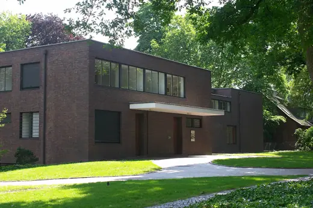
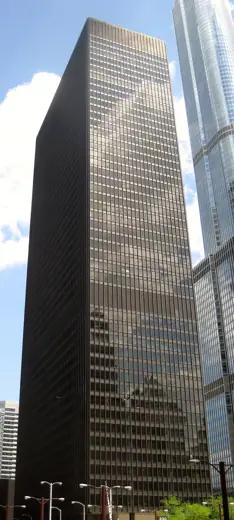

Mies van der Rohe buildings 16
Sort
 Weissenhof Estate1927 · Stuttgart
Weissenhof Estate1927 · Stuttgart Villa Tugendhat1930 · Brno
Villa Tugendhat1930 · Brno 860-880 Lake Shore Drive1951 · Chicago
860-880 Lake Shore Drive1951 · Chicago S. R. Crown Hall1956 · Chicago
S. R. Crown Hall1956 · Chicago Home Federal Savings and Loan Building1962 · Des Moines
Home Federal Savings and Loan Building1962 · Des Moines Toronto-Dominion Centre1967 · Toronto
Toronto-Dominion Centre1967 · Toronto Neue Nationalgalerie1968 · Berlin
Neue Nationalgalerie1968 · Berlin John C. Kluczynski Federal Building1974 · Chicago
John C. Kluczynski Federal Building1974 · Chicago Barcelona Pavilion1929 · Barcelona
Barcelona Pavilion1929 · Barcelona
Haus Lange and Haus Esters1930 · Krefeld Lemke House1933 · Berlin
Lemke House1933 · Berlin Farnsworth House1951 · Plano
Farnsworth House1951 · Plano Seagram Building1958 · New York
Seagram Building1958 · New York Westmount Square1967 · Montreal
Westmount Square1967 · Montreal Martin Luther King Jr. Memorial Library1972 · Washington
Martin Luther King Jr. Memorial Library1972 · Washington
330 North Wabash1973 · Chicago